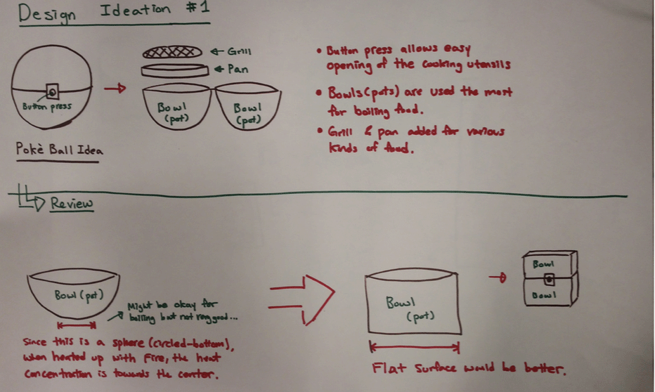
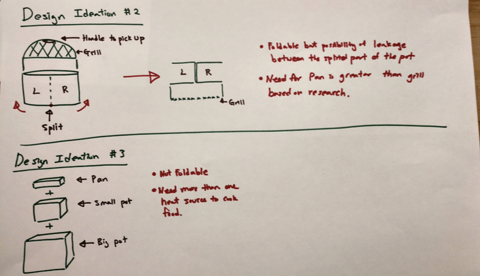
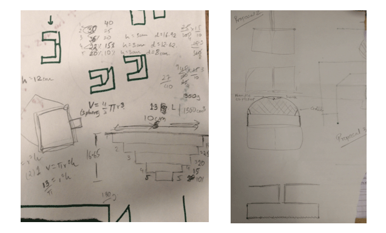

It is a cooking pot designed for hikers. The pot is light-weighted, sustainable and has multipurpose.
As a group, we all analyzed the persona and came up with ideas to approach the problem space. Since this was a very short 2 day challenge, our roles had to be well divided up in order to provide maximum outcome. For this project, my main role was to design 2D and 3D models using Sketch and Fusion 360. I also was in charge of creating a persona journey map as well as organizing the pdf slides that we were supposed to submit as our final product.
September 2016
Geunbae Lee | Nishant Panchal | Diego Osorio
Sketch | Fusion 360
Based on the persona shared, we extracted key information about Tom likes:
1. He is planning for a hike of 2.5 months during his Summer at the Appalachian trail.
2. The cooking utensils have to be folded to pack small.
3. He likes using his propane torch to cook food.
4. The utensil to be designed should allow him to serve 8 people at once.
5. Should be operable with a single hand.
1) Food
We started researching about what do hikers commonly eat for a long trip.
We found similar patterns of food habits including food that is rich on protein, carbohydrates and vitmains.
2) Location
Our initial approach was to design a product such that it would facilitate food storage considering it was a 2.5 months hiking trip. However, we thought it would be an extra baggage to carry all the above mentioned food for a 2.5 month hike, especially they had a chance to go bad. That is the reason we researched on Appalachian trail to understand the hiking routes and resources accessible along their trip. Based on our research Appalachian trail is a long trail that extends from Maine to Georgia. The experienced hikers normally carry food that would last for 4 to 7 days and when it is the right time, they visit a local market to re-stock their resources. Therefore, our design objective shifted from serving as a storage option to a concise and lightweighted tool for cooking.
3) Materials
The material we are using for our utensil is Aluminium and Silicone. Aluminium is selected as the base of the utensil since it is an excellent heat conductor and is light weight at the same time. The Silicone constitutes the most part of the body since it is light, a good heat conductor and malleable on external force, making it a perfect the for foldable utensil. Following is the analysis we performed comparing various metals and materials available in the market for building building a utensil.
Based on the hiker’s diet we discovered by research, we went through designs for utensil that can act as a pot and grill for cooking food. We designed the product as aesthetically correct as possible that would also serve upto 8 persons at a time, however, it used to lack in usability when using a single hand, as for Tom. You can check these design sprints below:
  After a lot of brainstorming and reflecting back to our problem statement, we narrowed down our scope to preparation of breakfast using the utensil we design. The utensil gives the power to be used as a:
1. Pot to support cooking features like steam, boil and cook soup. This feature makes use of the convection cooking process where the heat is carried to the food by air.
2. Pan for cooking scrambled eggs or heating sausages. In this case the cooking is completed by the process of conduction where the heat is transferred to the food by direct contact with the heat source. These two cooking methods cover all the major dishes that Tom, or any hiker, would cook for breakfast in the morning.
To ensure that the size of the utensil is enough to cook breakfast for, we researched on approximately how much does a hiker eat on a daily basis. A reasonable goal for a long trail hiker typically varies between 1.4 to 1.7 lb of food per day. If we divide this into breakfast, lunch and dinner, a hiker typically has ~0.5 lb of food in their breakfast.
Thus, for 8 hikers, a total of 4 lb food is required for breakfast. Based on the design of our product, we used the formula for ‘Volume of Frustum of a Right Circular Cone’ [V=pi*h/3(R2+Rr+r2)]. This formula helped us to develop a close estimate of volume of our utensil and give a good approximation of number of people it can serve. Considering the base cylinder has a diameter of 12cm (r) and the top cylinder has a diameter of 20cm (R), with height of 3cm (h) for each cylinder, the volume of the utensil is approximately 2.5 litres
Cradle to Cradle
We limited our materials to two, which are Aluminum and Silicone which are both recyclable very easily. During our research phase, we tried to find the best solution to our design problem while also addressing the sustainability issue.
Whole Systems Thinking
We tried to think of our design towards a direction where we not only thinki about the benefits of our design but also how it can impact nature.
Lightweighting
Based on our material research, again, we picked Aluminum and Silicone to be the only materials for our design. We could have picked stainless steel rather than Aluminum but we sued Aluminum instead beacuse it weighs less. Moreover, rather than having the whole pot designed in Aluminum, in order to reduce weight, we added Silicone to it to extract less Aluminum. Save the environment!